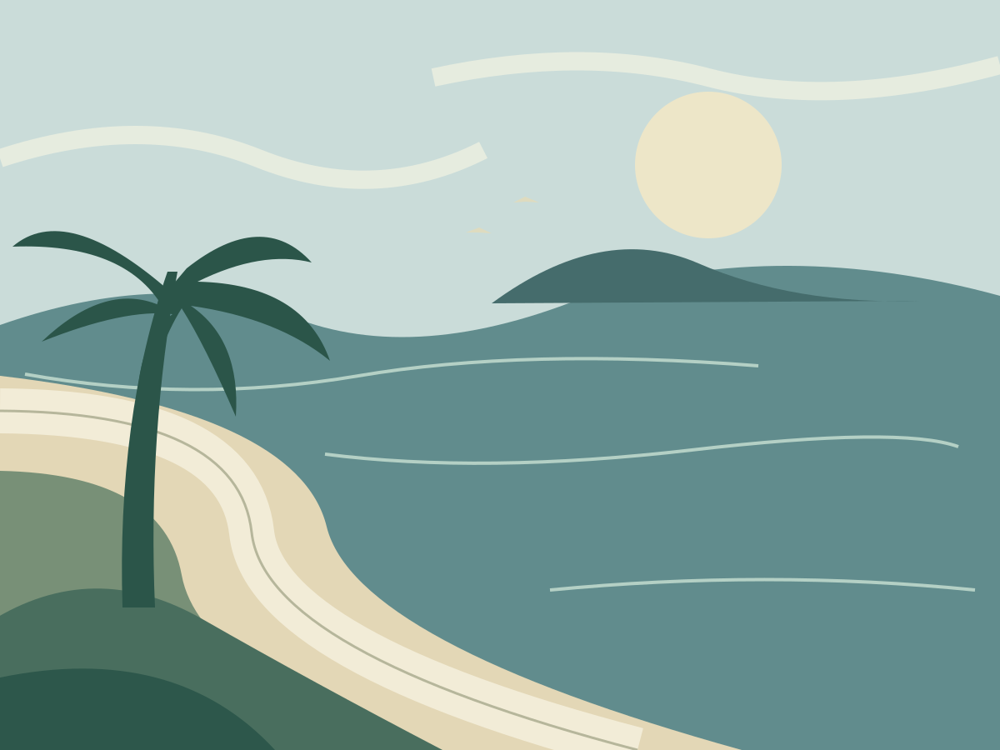
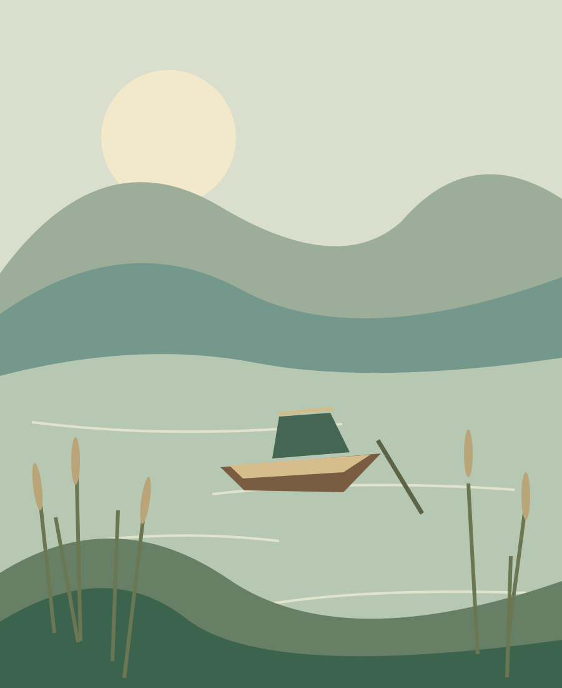
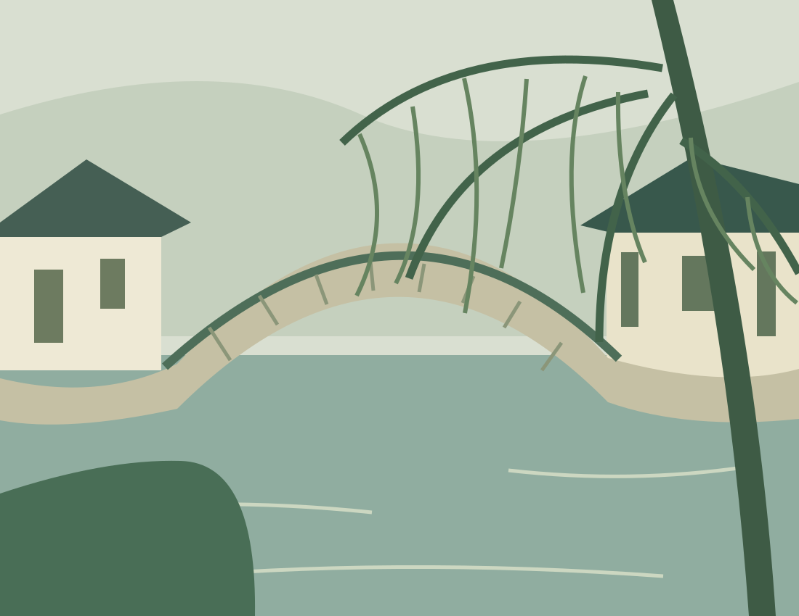
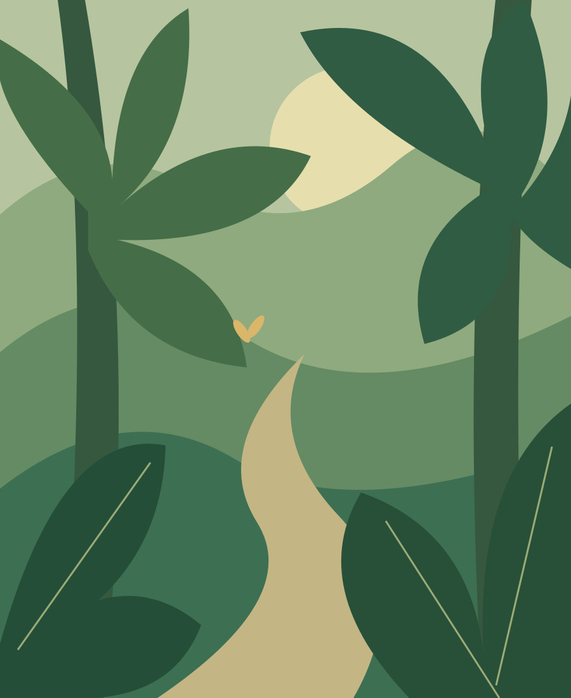

在路上，留一页。
从海边的清晨，走到江南的桥。翻一翻，总有一处想再去。
四座城市，五幅风景插画

下一页，去哪里？
沿着海岸，走到天亮。

湖很安静，风也是。

小桥那头，还有一条巷子。

把脚步，交给一片绿。
这一页，留给日落。
所有插画已显示。开启 JavaScript 后可以按城市筛选和放大查看。
画面均为风景插画，不含私人照片和日记。本页用于查看样式和测试访问，尚未接入登录、上传与跨设备同步。
风景插画示例